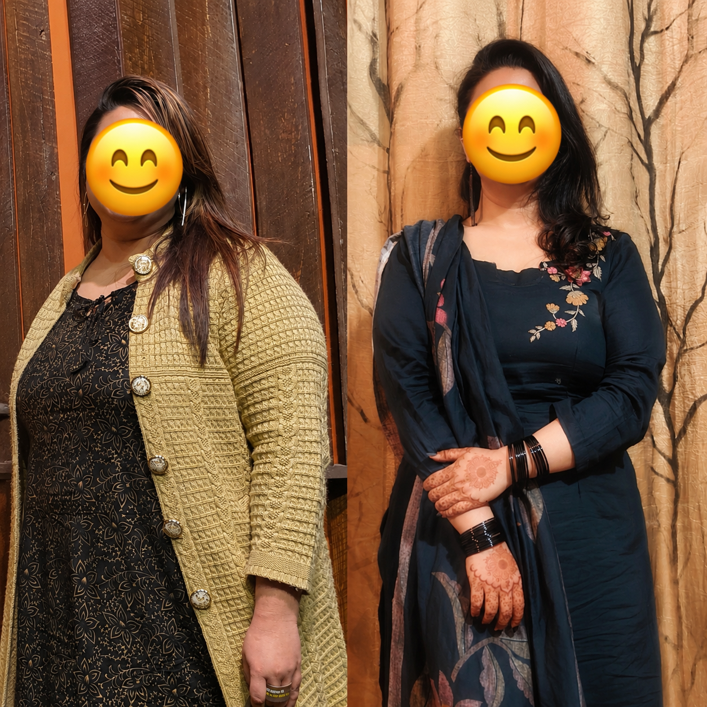
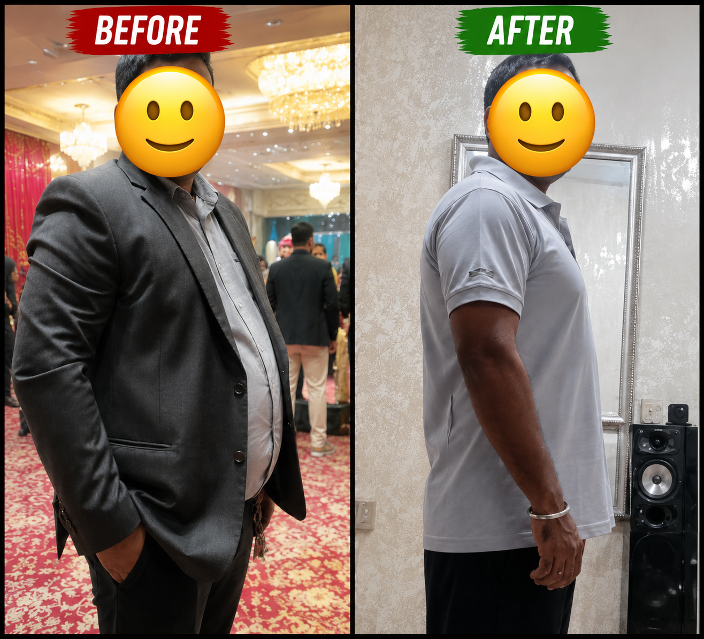
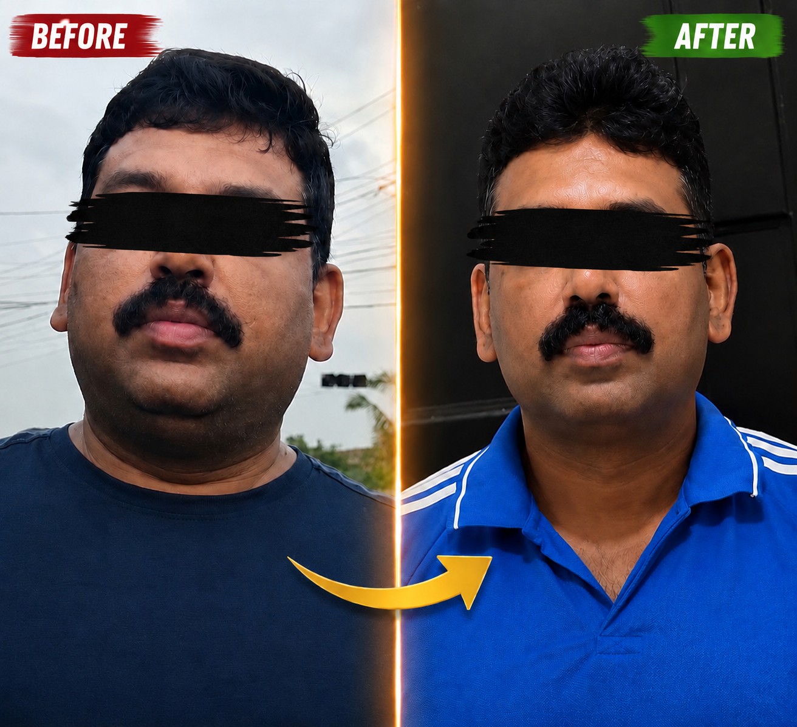
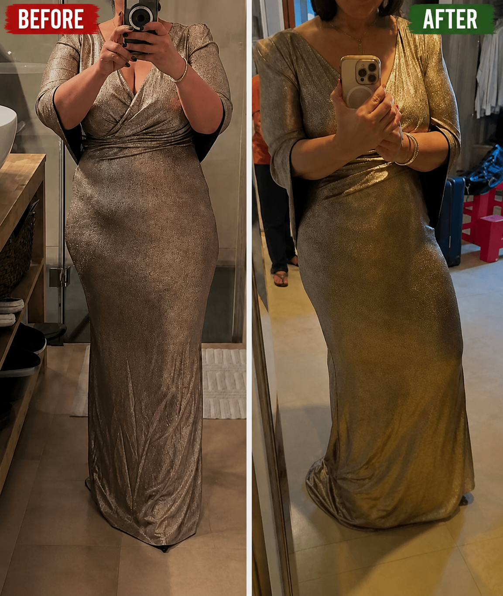
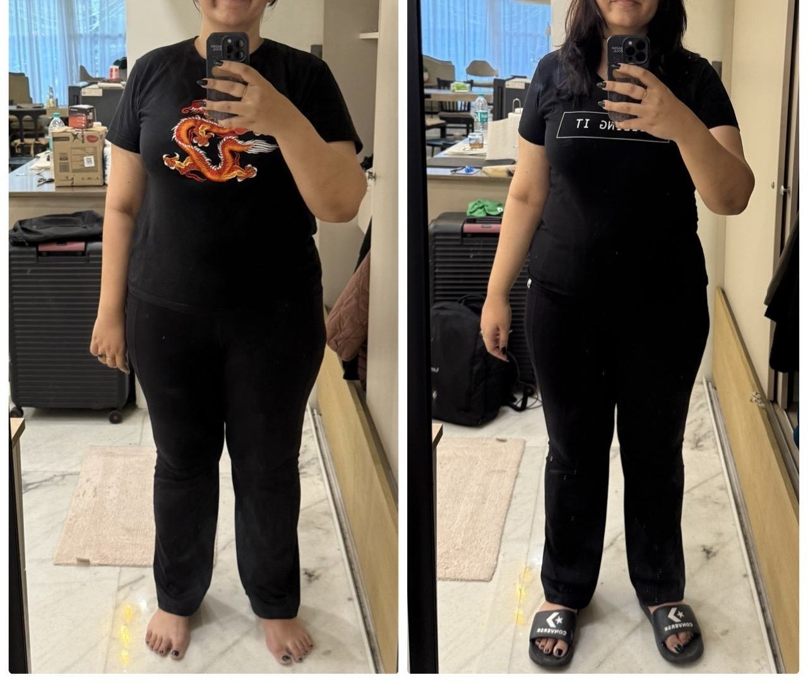
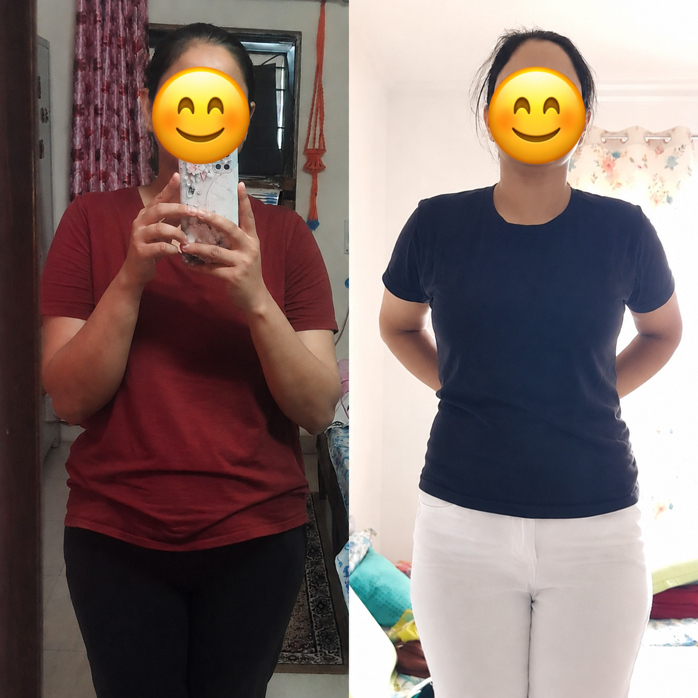
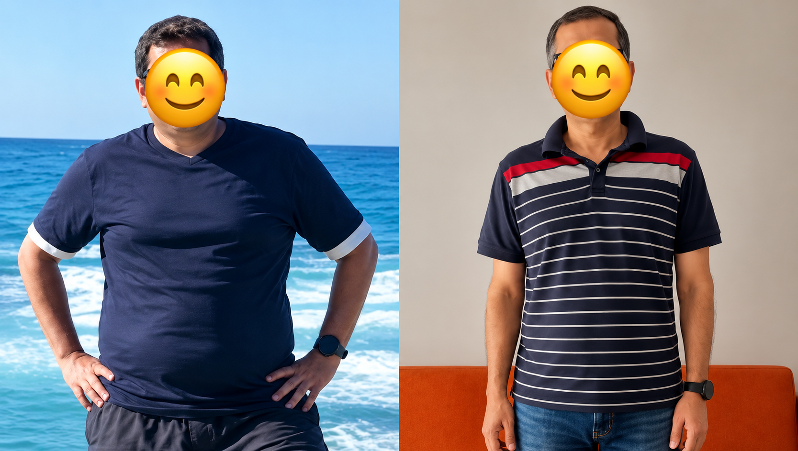
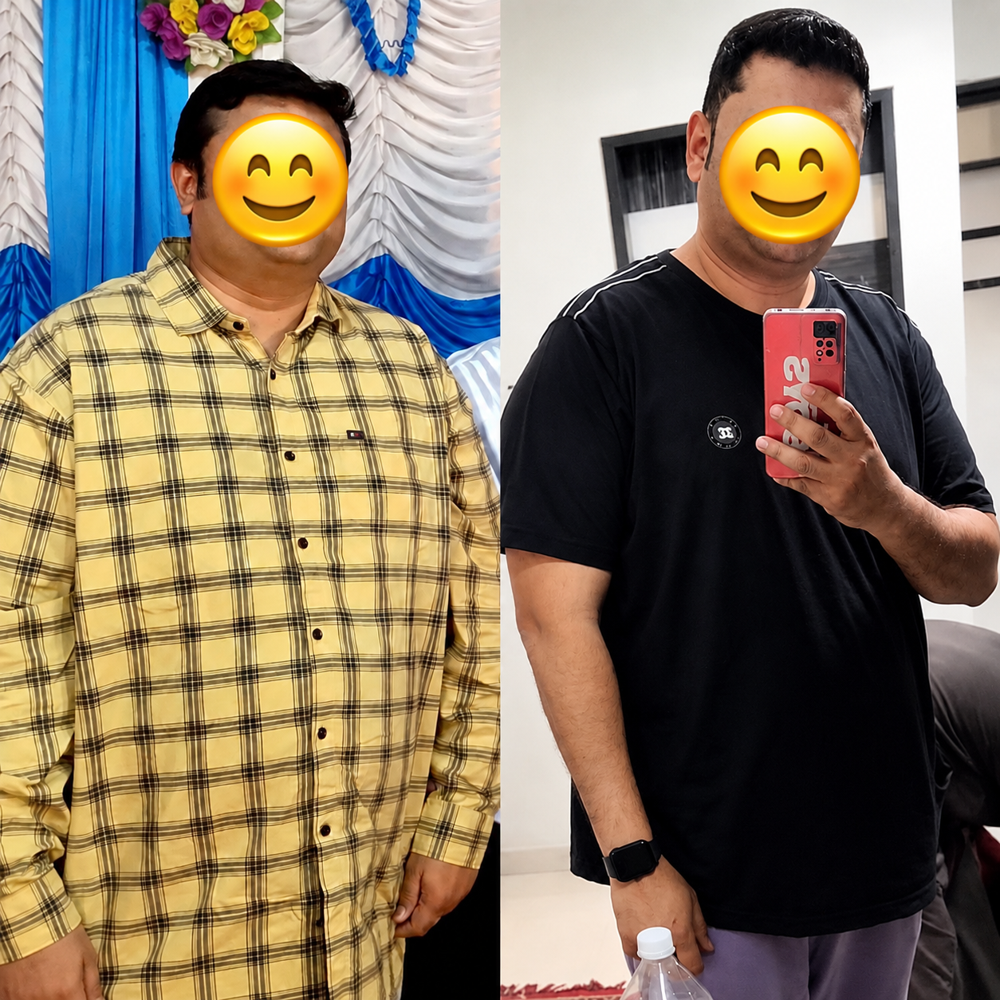

HbA1c 11.8 → 6.9 · Medication on reduction path · 3.5 years on Metformin with no real improvement — fixed from the root

HbA1c 10.8 → 5.5 · Brain fog cleared · Energy restored · Eating less and medicating for 6 years — getting worse every year

CPAP machine removed · Sleep apnea gone completely · No brain fog · No afternoon crash · 500 → 3,000 steps at a stretch

15 min → 60 min strength training 4x/week · Full physical strength & endurance restored

Blood sugar controlled · Sleep uninterrupted · Metabolic permission restored · A doctor who tried everything including GLP-1 — nothing worked until the root was fixed

HbA1c 8.2 → 6.1 · Medication reduced · Strength transformed · Active, walking more, eating less — still diabetic at 94kg. Not a motivation problem

Energy, sleep & gut health all improved · 10,000 steps daily now effortless

HbA1c 7.4 → 6.1 · Sleep apnea gone · Walking 10km daily · Diabetic, hypertensive, then sleep apnea hit — all three resolved

Biological age reversed 4.3 years · Energy improved · Brain fog gone · Sleep restored

Sleep improved · Energy stabilised · 1.1kg muscle gained · Bio age reversed 2.4 years

Inflammation reduced · Below 100kg for the first time in 5+ years

10 min → 45 min exercise · 3,000 → 8,000 steps · Strength & endurance rebuilt

15 min restricted → 45 min strength training · Ankylosing spondylitis improved · Energy restored

Zero motivation → 5x/week training · Energy 10/10 · Got promoted · Credited his transformation

Completed her first 10km marathon · Brain fog gone · Sleep & gut restored · Full energy returned

HbA1c 8.7 → 6.9 · 0 → 10 full pushups · Blood sugar controlled · Strength rebuilt